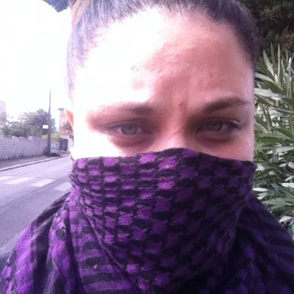

Qui somme nous ?
Voici l'équipe Anticythere de la promotion 2015 de SimplOnMars. Notre équipe éclectique se regroupe dans un site au design minimaliste. Le nom de l'équipe est une référence à la machine d'Anticythère, le "premier" calculateur analogique, retrouvée lors d'une fouille archéologique en méditerranée et probablement inventée par Archimède en -100av JC. Cet objet très évolué et inventé à une époque très reculée pose les bases de notre philosophie : utiliser des méthodes simples pour obtenir un résultat fourni. Voici donc les différents membre de l'équipe :

Océane Blanc / 23 ans
voir la description
Antoine Pradon / 25 ans
voir la description
Sebastien Le Gall / 26 ans
voir la description
Théo Desvignes / 24 ans
voir la description